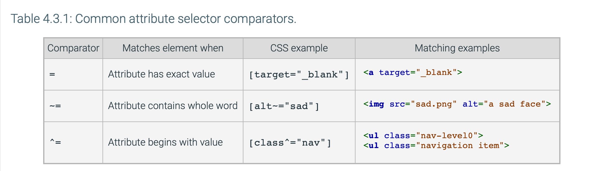
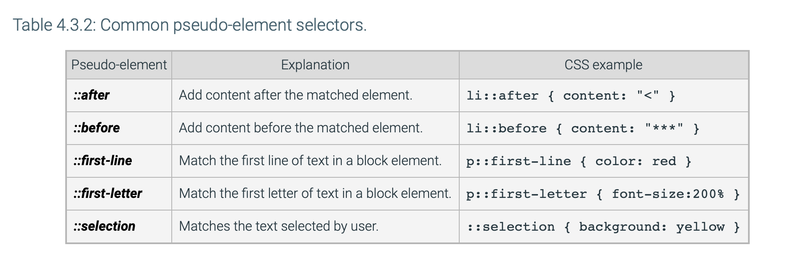

Homework 7: CSS Fundamentals 2
Advanced Selectors
Selectors
-
Universal Selector: specified using an
asterisk matches all elements in the webpage
-
Multiple Selector: specified as
elemenent, element matches more than one of a
specified element
-
Child Selector specified using the
< character
between two selectors matches elements that have
the second element as a direct child
-
Descendant Selector specified with a
spaced between two selectors matches all of the
second element descendants of the first element
-
General Sibling Selector specified with a tilde
~ between two selectors matches all of the second
element if the second element occurs after the first.
-
Adjacent Sibling Selector specified with the
+ sign matches the second element that immediately
follows the first element, where both elements have the same
parent
-
Attribute Selector encased in brackets
[ ] matches the element with the attribute or
attribute value pair!

-
pseudo element selector: specified with two
colon characters :: followed by a
pseudo-element matches parts of elements

Common CSS Properties
-
color property: changes the text color, can be
either one of the 140 CSS color names, rgb(red, green, blue)
with max 255 per color value,
hexadecimal color #RRGGBB where 00 is the lowest
intensity and FF is the highest, an
HSL value: hsl(hue, saturation, lightness)
with max values hsl(360, 100%, 100%)
Background Properties
-
background-color property: specifies the
background color
-
background-image: specifies a background image,
can be an image using the url("locationOfImage") value
-
background: shorthand for setting multiple
properties at once